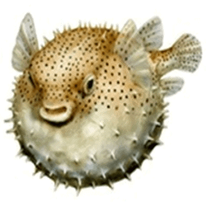

El fugu, nombre con el que es conocido el pez globo en Japón, ha sido consumido durante siglos y es actualmente considerado una delicia culinaria en muchas zonas del mundo. La presencia en algunos de estos peces de una toxina potencialmente mortal para el ser humano (tetrodotoxina), ha hecho que su consumo sea controlado de manera más estricta y su manipulación limitada a cocineros específicamente formados.
A pesar de ello continúa habiendo casos de intoxicación secundaria a su consumo, que en los últimos años no se limitan exclusivamente a Asia o el océano Índico, sino que se extienden, aunque siempre a modo de casos aislados, a todos los continentes.
Por otro lado, dado el amplio conocimiento actual de la toxina, en las últimas décadas, se ha comenzado a estudiar su aplicación como terapia para el dolor crónico en el ser humano.
En julio de 1894 Yoshizumi Tahara, presentó a la Sociedad de Farmacéuticos de Japón, un veneno aislado en los ovarios de un pez globo (1). Más adelante, en 1909 se confirma la presencia de esta sustancia en la mayor parte del organismo del pez, especialmente en el hígado, pero también en piel e intestinos. En los años sesenta se define su estructura química (Figura 1) y es llamada Tetrodotoxina (TTX), nombre derivado de la familia taxonómica de peces marinos a los que pertenece el pez globo, Tetraodontidae (2).
Inicialmente se atribuía la presencia de la TTX exclusivamente al pez globo. Sin embargo, desde su hallazgo casual en 1964 en un anfibio (tritón de California) en Estados Unidos (3), la toxina ha sido aislada en otras especies tanto terrestres, como marinas, desde sapos, pulpos, estrellas de mar, cangrejos, hasta algunos tipos de pez volador (4).